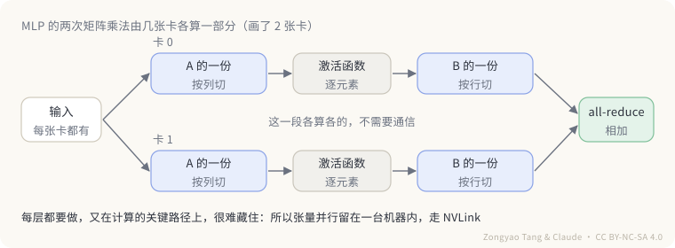
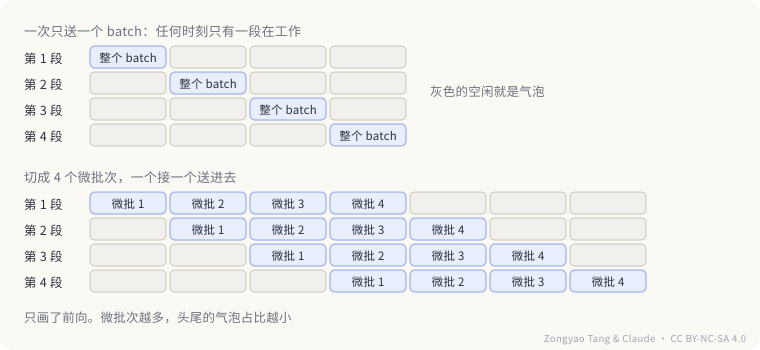
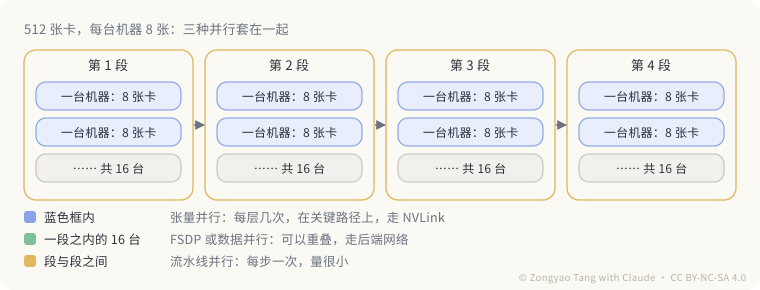

线索是：FSDP 切开的是“存储”，每张卡仍然要完整地算每一层。模型再大，就得把“计算”也切开 → 在一层之内切，是张量并行 → 按层的先后切，是流水线并行 → 这几种并行各有各的通信特点，要按链路的带宽分层组合 → 最后看一个把“切开”的思路用到序列长度上的例子。这一单元处处在用 5.1 的那个落差：机内比跨机宽一个量级。
第 7 部分 · 分布式训练7.3 模型并行与 TorchTitan
这一单元回答更大的模型、更多的卡：几种并行方式怎么组合？
承接 7.2：FSDP 切的是“存储”，这一单元还要把“计算”也切开。
讲解
1张量并行：把一个矩阵乘法切开，几张卡一起算
Megatron 的做法：MLP 的第一个矩阵按列切，第二个按行切，每张卡算自己那部分，最后用一次 all-reduce 合并。注意力按头切分，也是同样的套路。
FSDP 切的是存储：参数分开存，但每张卡在计算某一层时，仍然要拿到这一层的完整参数、完整地算一遍。张量并行切的是计算本身：一层的矩阵乘法由几张卡各算一部分。
以 MLP 为例。 Transformer 里的 MLP 是两次矩阵乘法：先把维度放大 4 倍（矩阵 A），过激活函数，再缩回来（矩阵 B）。Megatron 的切法：
- 把 A 按列切成 N 份。每张卡用自己那一份，算出中间结果的 1/N（中间那 4 倍宽的向量，每张卡各有一段）。这一步不需要通信：输入是一样的，各算各的。
- 激活函数是逐元素的，各卡对自己那一段做就行，也不需要通信。
- 把 B 按行切成 N 份。每张卡用自己那一段中间结果乘以自己那一份 B，得到的是“最终输出的一部分贡献”。
- 把 N 张卡的贡献加起来，才是完整的输出。这一步是一次 all-reduce。

A 按列切、B 按行切，只在最后相加时通信 “先按列切、再按行切”的巧妙之处在于：两次矩阵乘法之间不需要通信，整个 MLP 只在最后通信一次。
注意力同理。 多头注意力的各个头本来就是独立计算的，把头分给各张卡；最后的输出投影按行切，再做一次 all-reduce。
所以每个 Transformer 层的前向有两次 all-reduce（注意力一次，MLP 一次），反向再有两次。
为什么只能放在机内。 和数据并行、FSDP 的通信对比一下：
- 数据并行：每一步通信一次，内容是梯度，可以和反向重叠。
- 张量并行：每一层通信若干次，内容是激活值；而且下一步的计算要用这次通信的结果，必须等它完成才能继续。它在计算的关键路径上，很难藏住。
通信这样频繁、又这样难以重叠，只有放在最快的链路上才划算。5.1 给过数字：机内的 NVLink 比跨机的网络宽一个量级。所以张量并行的范围通常就是一台机器内的那几张卡（比如 8）。
（TorchTitan 提到一种“异步张量并行”，通过把通信和计算拆成更小的块来增加重叠，在它的实验里带来了一成多的提升。思路还是 0.1 的那一条：想办法用别的活把等待填满。）
打个比方像几个人合抄一本书：每人抄不同的几列，最后拼起来。
所以每一层都要通信，而且通信在计算的关键路径上、很难藏住；张量并行只适合放在带宽极高的同一台机器内部（NVLink）。
- 在一层之内切是一种办法。另一种更直观：按层的先后顺序切。
2流水线并行：按层切开，用微批次填满“气泡”
把模型的不同层放在不同的卡上，数据像流水线一样逐段经过。只送一批数据时，大部分卡都在等；把一个 batch 切成很多微批次（micro-batch），各段就能同时开工。空闲的比例约为 (段数−1)/(微批次数+段数−1)。
把模型的层分成几段，每段放在一组卡上。比如 32 层分成 4 段，每段 8 层。数据从第 1 段流到第 4 段完成前向，再从第 4 段流回第 1 段完成反向。
通信很少。 段与段之间只需要传边界上的激活值（前向）和它的梯度（反向）：大小是 batch × 序列长度 × 隐藏维度，和模型的参数量无关，而且每一步只传一次。相比张量并行每层几次的 all-reduce，这点通信量小得多，也只发生在相邻的两段之间。所以它可以放在跨机的链路上。
问题是气泡。 如果一次只送一个 batch 进去：它在第 1 段时，第 2、3、4 段没事干；它到第 2 段时，第 1、3、4 段没事干……任何时刻只有一段在工作，4 组卡的利用率只有四分之一。这些空闲就叫气泡。

4 段的例子：行是段，列是时间 用微批次填上。 把一个 batch 切成 m 个小的微批次，一个接一个地送进去。第 1 个微批次进入第 2 段时，第 2 个微批次就进入第 1 段，依此类推。稳定之后每一段都在处理某个微批次，像真正的流水线。
但开头和结尾躲不掉：最开始，后面的段要等第一个微批次流过来；最后，前面的段要等最后一个微批次的反向流回来。算一下空闲的比例：
气泡占比 = (p − 1) ÷ (m + p − 1)，其中 p 是段数，m 是微批次数。
- 4 段、1 个微批次：3/4，就是上面说的四分之三空闲。
- 4 段、8 个微批次：3/11，约 27%。
- 4 段、32 个微批次：3/35，约 9%。
微批次越多气泡越小。代价有两个：每个微批次的激活值都要留到它的反向回来才能释放，所以同时“在途”的微批次越多，显存占用越高；微批次太小，每张卡又吃不饱（回到 0.2）。Megatron 的论文还提出了一种交错的排法，让每组卡负责不相邻的几小段，用更多的通信换更小的气泡。
和前面的并行方式对比着记：
- 数据并行：切数据。通信是梯度，每步一次。
- FSDP：切存储。通信是参数和梯度，每层几次，可以预取。
- 张量并行：切一层之内的计算。通信是激活值，每层几次，在关键路径上。
- 流水线并行：按层切计算。通信是段边界的激活值，量小，但有气泡。
打个比方像洗衣、烘干、叠衣服三台机器：一次只洗一大筐，另外两台都闲着；分成很多小筐，三台机器就能一起转起来。
所以微批次越多，气泡越小；流水线只在相邻段之间传激活值，通信量小，适合跨机器。
后面会用到 并行方式按带宽分层组合出处Accelerate 第 11 章 多机训练Megatron 论文 流水线并行与气泡TorchTitan 论文 第 5 页 §2.1.4 流水线并行- 四种并行各有长短。真正训练大模型时，它们是叠在一起用的。怎么叠，由一条原则决定。
3并行方式按带宽分层组合
张量并行通信最频繁，放在机器内部；流水线并行通信少，可以跨机器；数据并行和 FSDP 放在最外层；序列特别长时，再加上下文并行。TorchTitan 用一个多维的设备网格（DeviceMesh）把这几个维度组合起来。
原则：通信越频繁、越难重叠的并行方式，放在越快的链路上。
把四种并行按通信的“苛刻程度”排序，再对上 5.1 和 5.3 的链路：
并行方式 通信 放在哪 张量并行 每层几次，在关键路径上 一台机器内，走 NVLink FSDP / 数据并行 每层或每步，可以重叠 跨机，后端网络 流水线并行 每步一次，量很小 跨机，可以跨得更远 一个具体的例子。 512 张卡，每台机器 8 张：
- 每台机器内的 8 张卡做张量并行，合起来当“一张大卡”用。
- 64 台机器分成 4 段做流水线并行，每段 16 台。
- 每段里的 16 台机器之间做 FSDP 或数据并行。

讲解里的例子画成图 于是每张卡同时属于三个“组”：它所在机器的张量并行组、它所在段的数据并行组、以及流水线上的某一段。总卡数 = 8 × 16 × 4。
DeviceMesh 就是把这件事写成代码。 PyTorch 用一个多维的网格来描述所有的卡：每一维对应一种并行方式，上面的例子就是一个 4 × 16 × 8 的网格。沿着某一维取出来的一组卡，就是做那种并行时互相通信的对象；每一维各有自己的进程组（也就是 6.2 里的通信器）。TorchTitan 的贡献之一，就是让各种并行方式都基于这同一个网格和“分布式张量”来实现，于是可以自由叠加，而不必为每种组合单独写一套代码。
这对排查意味着什么。 一个作业里同时存在好几个通信器，各自走不同的链路、有不同的通信模式：
- 张量并行那一维慢了：查机内，NVLink 的状态（5.1）。
- 数据并行或 FSDP 那一维慢了：查跨机的网络（5.2、5.3、6.3）。
- 而“哪张卡属于哪个组”取决于进程编号到物理位置的映射。如果映射错了，比如张量并行组里的 8 张卡被分到了两台机器上，最频繁的通信就落到了最慢的链路上，性能会差出一个量级，而程序不会报任何错。
所以第 8 部分讲的调度（把一个作业的卡放在哪些机器上、进程编号怎么排）和这里是连着的：并行方案假设了一种物理布局，调度要把它兑现。
打个比方像公司组织：最需要频繁沟通的人坐在同一间办公室，部门之间按流程交接，分公司之间只交月报。
所以选择并行组合，先看每种并行的通信频率和每条链路的带宽：最频繁的通信放在最快的链路上。
承接 张量并行：把一个矩阵乘法切开，几张卡一起算流水线并行：按层切开，用微批次填满“气泡”FSDP 的节奏：用到哪一层才把它拼完整，用完就放掉NVLink 加 NVSwitch：每一对 GPU 之间都有专线Clos 拓扑：用很多小交换机，搭出任意两点之间不收窄的网出处TorchTitan 论文 第 2 页 DeviceMesh 与 DTensorTorchTitan 论文 第 10 页 §3.3.3 三维并行的组合Megatron 论文 图 2 张量并行与流水线并行的组合- 前面切的是参数和层。当序列本身长到一张卡放不下它的激活值时，还可以沿着序列的方向切。
4Ring Attention：序列太长，就切开在卡之间轮转
每张卡持有序列的一段 Q；K、V 的各段沿着环在卡之间传递。每张卡每收到一段 K、V，就用在线 softmax 累加一次注意力，同时把这段传给下一张卡。
问题。 序列长度到了几十万甚至上百万个 token 时，哪怕 batch 只有 1，一层的激活值也可能放不进单卡显存。数据并行帮不上忙（它切的是 batch），张量并行和流水线并行切的是模型，也帮不上。
切法。 把序列切成 N 段，每张卡负责一段。除了注意力以外的运算（MLP、归一化）都是逐位置的，各卡处理自己那一段就行，互不相干。难点只在注意力：每个位置的 Q 要和所有位置的 K、V 作用，而别的位置在别的卡上。
环形传递。 每张卡留着自己那一段的 Q 不动。K 和 V 沿着环在卡之间传：
- 第 0 轮：每张卡用自己的 Q 和自己的 K、V 算注意力的一部分；同时把自己的 K、V 发给下家。
- 第 1 轮：每张卡收到上家的 K、V，用自己的 Q 和它们再算一部分，累加到结果上；同时把这份 K、V 继续传给下家。
- 这样转 N−1 轮，每张卡的 Q 都见过了全部的 K、V。
为什么能“一部分一部分地算”。 注意力里的 softmax 需要整行的归一化，按理说要看完所有的 K 才能算。但 4.4 讲过在线 softmax：只要随时维护“目前的最大值”和“目前的指数和”，就可以一块一块地读入 K、V，边读边修正，最后的结果和一次算完完全一样。
所以上下文并行和 Flash Attention 是同一个算法：
- Flash Attention：K、V 的“块”是从显存里一块块读进芯片上的高速存储。
- Ring Attention：K、V 的“块”是从别的卡上一段段传过来。
两者都是为了不让完整的 N×N 注意力矩阵在任何一个地方出现。这是 0.1 里“把数据搬到近处，多用几次”在两个不同尺度上的体现：一次在芯片内，一次在卡之间。
通信和计算可以重叠。 每一轮里，“用手头的 K、V 做计算”和“把它传给下家、同时接收上家的”是同时进行的。只要一轮的计算时间不短于一轮的传输时间，通信就被藏住了。
在组合里，上下文并行通常放在张量并行的外面一层：它的通信比张量并行少，但比数据并行频繁。
打个比方像读书会：每人手里拿着不同的章节，大家轮流传阅，每个人读完一圈就看到了全书。
所以上下文长度可以随卡数线性扩展；它其实就是 4.4 的“分块 + 在线 softmax”，只是“块”换成了不同的卡。
出处第 13 讲 notebookTorchTitan 论文 第 10 页 上下文并行与三维并行的组合
串起来
张量并行把一层的矩阵乘法切给几张卡，每层都要通信，只能放在机内。流水线并行把不同的层放在不同的卡上，只传激活值，适合跨机，代价是“气泡”。实际的大模型训练把它们按带宽分层组合：最频繁的通信放在最快的链路上。上下文并行则把同样的思路用在了序列长度上。
考考自己
不看讲解，用自己的话讲一遍。
- 张量并行是怎样把一层的计算切给几张卡的？为什么它只适合放在同一台机器内？
- 流水线并行的“气泡”是什么？微批次是怎样减小它的？
- 几种并行方式组合时，各自应该放在哪一层链路上？依据是什么？
- 上下文并行（Ring Attention）解决什么问题？它和 Flash Attention 是什么关系？
术语
- tensor parallelism
- 张量并行
- pipeline parallelism
- 流水线并行
- pipeline bubble
- 流水线气泡
- context parallelism
- 上下文并行